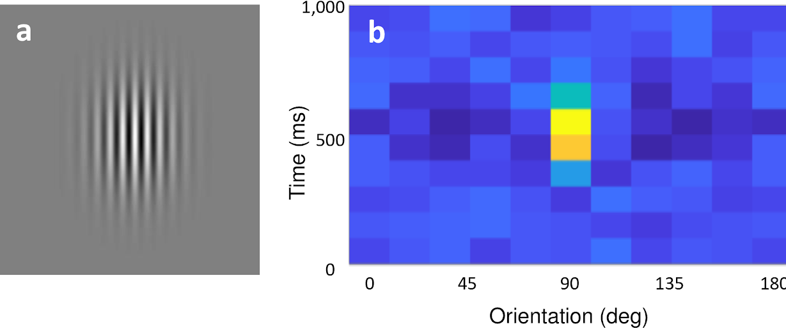

Running the paper examples
This guide provides up-to-date steps for running the examples provided in the Rigbox paper(1). Before starting, ensure Rigbox has been installed following the installation guide.
Contents
Add examples to search path
To ensure that these examples are in your MATLAB search path, run the following code:
rigbox = fileparts(which('addRigboxPaths')); % Location of Rigbox folder addpath(fullfile(rigbox, 'signals', 'docs', 'examples')) % Add examples to path
Example 1 - The Ringach Experiment
Our first example of a human-interactive Signals experiment is a script that recreates a psychophysics experiment to study the mechanisms that underlie the discrimination of a visual stimulus(2). In this experiment, the observer looks at visual gratings that change rapidly and randomly in orientation and phase. The gratings change so rapidly that they summate in the visual system, and the observer tends to perceive two or three of them as superimposed. The task of the observer is to hit the 'ctrl' key whenever the grating's orientation is vertical. At key press, the probability of detection is plotted as a function of stimulus orientation in the recent past. Typically, this exposes a center-surround type of organization, with orientations near vertical eliciting responses, but orientations further away suppressing responses.

Run Example 1
To view the first example, simply run the signals/docs/examples/ringach98.m file. To start the experiment, click the 'Play' button. When finished, simply close the figure.
ringach98 % Run the experiment
Example 2 - Signals Pong
A second human-interactive Signals experiment contained in the Rigbox repository is an exp def which runs the classic computer game, Pong. The signal which sets the player's paddle position is mapped to the optical mouse. The epoch structure is set so that a trial ends on a score, and the experiment ends when either the player or cpu reaches a target score.
Run Example 2
To run Pong, simply call eui.SignalsTest in MATLAB and select signalsPong.m, or run the below code. To play, click the 'Start' button. When finished, click the 'Stop' button and close the figure.
eui.SignalsTest('signalsPong');
References
- Bhagat J, Wells MJ, et al. (2019) Rigbox: an Open-Source Toolbox for Probing Neurons and Behavior. bioRxiv 672204
- Ringach DL (1998) Tuning of orientation detectors in human vision. Vision Res 38, 963-972.
Authors: Jai Bhagat, Matteo Caranini, Miles Wells
v1.0.0